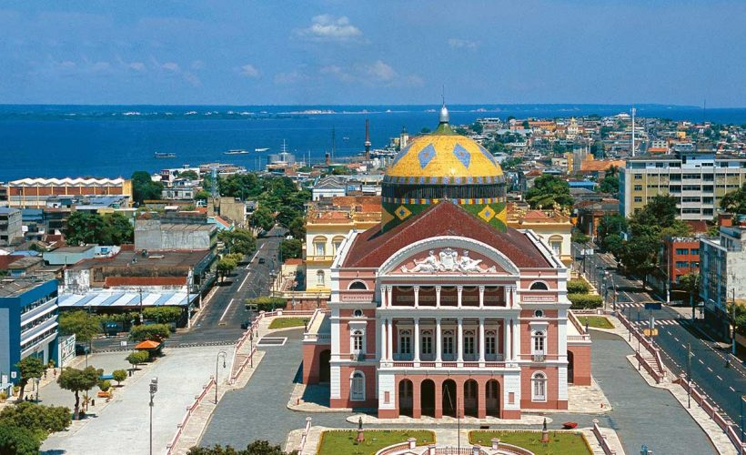
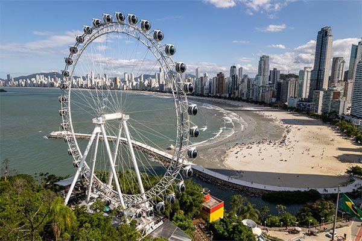
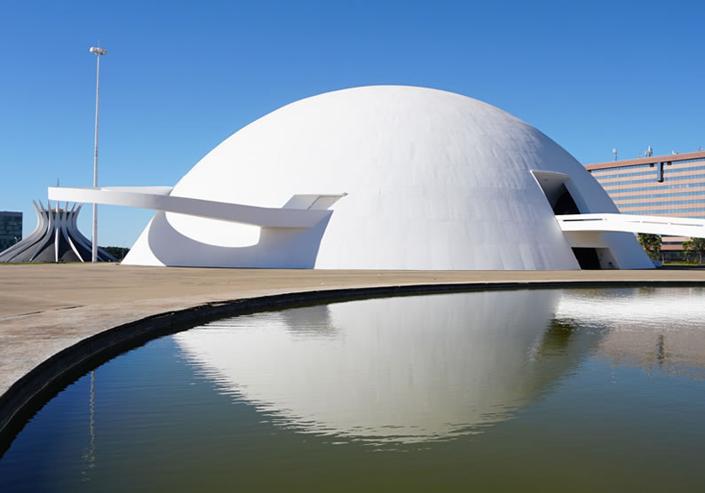
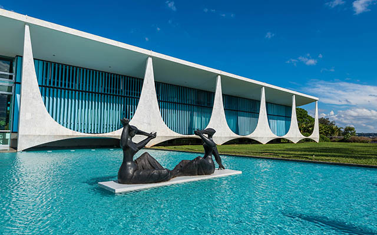

Paraíso da Revoada
Pode ser remetido aos seus predecessores, os carros de corrida 911 GT1 e LMP1-98.
.|  |  |  |  |
|
|
|
|
|
|
Ouviu-se falar na produção de uma versão musculada do Carrera GT. É o caso do Gemballa Mirage, um supercarro com o mesmo motor 5.7 litros V10 |
com a adição de dois turbos. Debita perto dos 1000 cavalos. Vai incluir portas do formato "asas de gaivota" (gullwing) e um tejadilho (telhado) |
Especulava-se também uma preparação feita pela 9ff, uma companhia que prepara os seus 911 para teste de velocidade máxima. A notícia |
remonta a 4 de Outubro de 2006. Ao contrário do Gemballa, este 9ff vai debitar 912 cavalos (mais 300 cavalos em relação ao original) graças à instalação de dois turbos |
Devido em parte as mudanças nas leis em 1998 por conta da FIA e ACO, ambos projetos foram cancelados.
Na época a Porsche tinha planejado um novo protótipo para a corrida de Le Mans de 1999. No carro inicialmente pretendia-se usar um motor boxer de 6 cilindros, mas foi mais tarde reprojetado para usar um novo motor V10, trazendo o projeto para a conclusão planejada em 2000. O motor V10 foi planejado secretamente pela Porsche para a equipe de Fórmula 1, Arrows (conhecida como Footwork) em 1992, depois engavetado. O motor ressurgiu para o protótipo de Le Mans e aumentado em tamanho para 5,7 litros. Infelizmente o projeto foi cancelado após dois dias de testes com o primeiro protótipo de teste, em meados de 1999, em maior parte devido a Porsche decidir projetar o utilitário esportivo Cayenne com o envolvimento da Volkswagen e Audi, portanto requerindo engenheiros especializados da divisão de carros esportivos. Foi também especulado que o presidente da VW-Audi Ferdinand Piëch quis que o protótipo de Le Mans da Audi, o Audi R8 não fosse designado para competir com o Porsche em 2004.